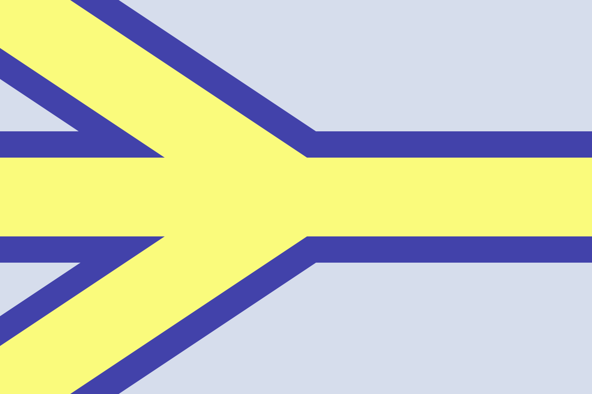

ンソピハワールドWiki
ンソピハ
概要
ンソピハとは、ンソピ場生みの親である。ラテン文字表記はnsopikha。自称人工言語界の撥音。
人間
ンソピハについて知られていることは意外と少ない。思い出せる限りで書くと、
・元カノがいるらしい
・めっちゃ言語の知識がある
・声がいい
・jan wawa pi toki pona(tawa ona la, ona li jan meso pi toki pona)
・人工言語を作っている
生態
ンソピハの大きい特徴の一つとして、極端な早寝早起きであることが知られている（例・夜9:30～朝4:00）。これについて本人は、「親の方針だから」と公言している。
名前の由来
そんなもんしらん！本人に聞け
旗
よく勘違いされるのだが、黄色と青と白のンソピ旗は、ンソピハ本人の旗ではなく、ンソピハの創作物の旗である。色はトキポナのシンボルをイメージして決められたという。

外部リンク
ツイッター（Xじゃないよ）
ンソピ場